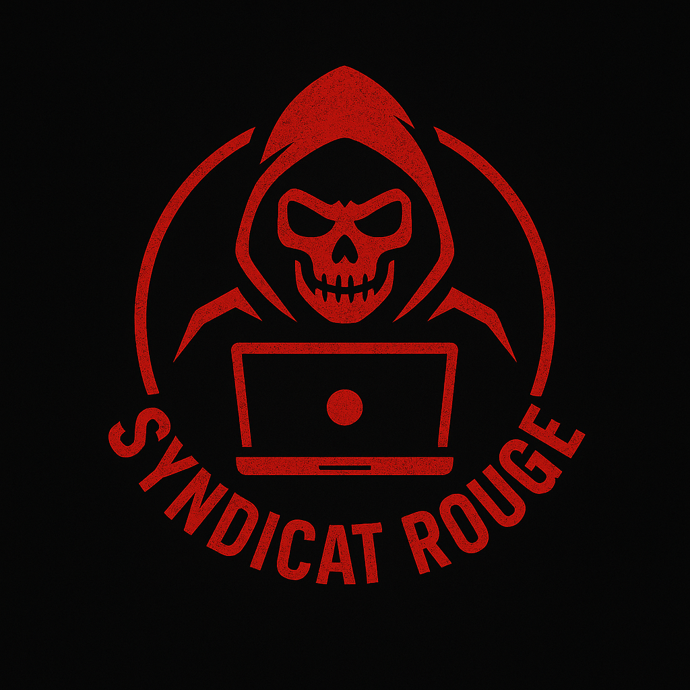

Syndicat Rouge // Archives
Backup non chiffré retrouvé sur un disque oublié
Liens internes récupérés (certains morts) :
Étape 1 – Reconstruction du Site Corrompu
Étape 2 – Camouflage Optique
Étape 3 – Le Mécanisme Bloqué
Étape 4 – Le captcha piégé
Caisse noire — transferts internes
Dossiers de cibles — priorités
Réseau d'agents (corrompu)
Accès code secret